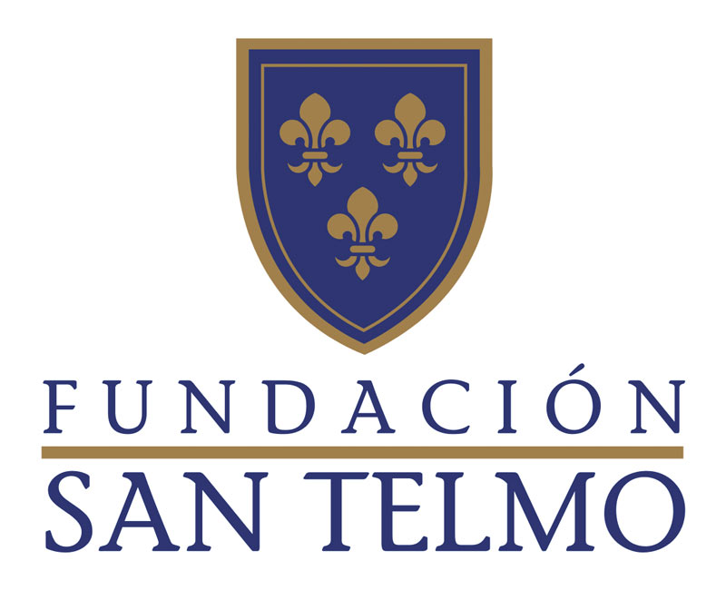

Experiencia

Leaders (2022)
Manejo de clases online y equipo audiovisual en Icada para mandos intermedios.
Duración: 9 meses

Ayesa (2023)
Servicio técnico y microinformática, trabajando en equipo y bajo presión.
Duración: 4 meses

Fundación San Telmo (2024)
Técnico de medios audiovisuales. Familiarizado con marcas como Shure, Bosch, Extron, Blackmagic, etc.
Duración: Desde Septiembre 2024 hasta la actualidad